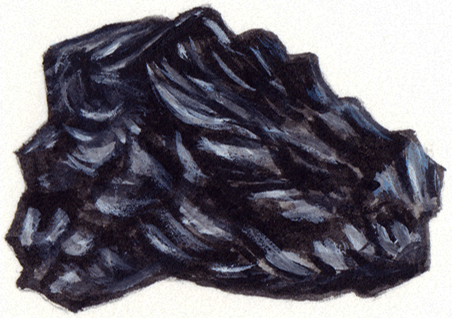

The Formation of Coal Deposits
A look at Coal Deposits in The Lehigh Valley

Developed and Produced by
The Delaware & Lehigh National Heritage Corridor
Written And Illustrated By
Lance Leonhardt
e-book Publishing software provided by Killer Interactive, LLC.
Coal's ability to burn has made it one of the most important rocks on Earth. It has lighted fires and provided heat and energy to homes and industries around the world for a thousand years.
Eastern Pennsylvania's Carbon and Luzerne counties are blessed with an underground abundance of anthracite coal, whose high carbon content allows it to burn hotter and longer than other varieties.
Coal was mined in the region in the early 1800s and replaced charcoal as the fuel that stoked the great blast furnaces at iron towns in Carbon, Lehigh, Northampton and Bucks counties.
The abundance of coal and iron and the availability of a cheap immigrant labor force helped the region become an industrial leader and an important player in the birth and growth of the American Industrial Revolution.
Formation of Coal
Coal's ability to burn has made it one of the most important rocks on Earth. It has lighted fires and provided heat and energy to homes and industries around the world for a thousand years.
Coal is a black sedimentary rock made over millions of years from once-living plant material such as leaves and wood. Tremendous amounts of plant material, and specific conditions and events in Earth’s history, were needed for coal to form.
Our story of coal begins about 300 million years ago when much of the land that would become the United States was under water. Prehistoric Pennsylvania was located near the equator and was covered by swamps and shallow seas.
Plants thrived in the tropical climate along the equator where there was an abundance of sunlight, water, and warm temperatures. Swamps along rivers that drained into shallow seas produced huge amounts of plant material over long periods of time.
As the swamp plants died, they became buried and were slowly squeezed, or compressed, into layers of a moist, spongy, partially decayed plant material called peat. The layers of peat settled beneath the swamps and the nearby coastline.
Formation of Coal
Coal is a black sedimentary rock made over millions of years from once-living plant material such as leaves and wood. Tremendous amounts of plant material, and specific conditions and events in Earth’s history, were needed for coal to form.
When trees, ferns, and other swamp plants died, they fell into the shallow swamp water and became buried in the bottom of the swamp where there was little or no oxygen.
The low oxygen levels protected the plant material from decay by decomposers such as bacteria, and allowed the plants to build up in deep layers over time. The layers of plants eventually became layers of peat. The formation of peat is the first step in the process of dead plants becoming coal.
Marine Carbonate Reef
When trees, ferns, and other swamp plants died, they fell into the shallow swamp water and became buried in the bottom of the swamp where there was little or no oxygen.
Tremendous heat and pressure are required to change peat into coal. The heat and pressure in the coal-making process came from the weight of sediments ‐ such as sand and mud ‐ that accumulated on top of the peat layers that laid at the bottom of the swamps.
Sometimes the sand and mud was carried into the swamps by rivers. At other times, rising sea levels carried sand into the swamps. As the swamps became covered with sediments over millions of years, the weight and pressure of the sediments heated and compressed the buried peat layers, squeezing out water and gases from the partly decayed plant material and changing the peat into a type of coal called lignite.
As compression forced out water and gases in the peat, it concentrated carbon atoms that were used during photosynthesis, a process by which plants make leaves and wood. Materials that contain large amounts of carbon have energy and are combustible, meaning they are able to burn. Wood, for example, is about 50% carbon; peat about 60%. Although coal is a rock, its high levels of carbon allow it to burn.
Coal receives a grade, or rank, by how much carbon it contains. Lignite, with up to 70% carbon, is a low rank coal. Fifty feet of peat compresses into approximately 10 feet of lignite. Compressing lignite further increases the carbon concentration and produces a higher rank coal called bituminous coal, which has a carbon concentration of 75 to 85%. Ten feet of lignite compresses into approximately five feet of bituminous coal.
A tremendous amount of heat and pressure is required to make anthracite coal, a shiny, hard, black coal that contains up to 98% carbon. Anthracite coal is found in Carbon, Luzerne, and several other eastern Pennsylvania counties.
Layers of Limestone Rock
Tremendous heat and pressure are required to change peat into coal. The heat and pressure in the coal-making process came from the weight of sediments ‐ such as sand and mud ‐ that accumulated on top of the peat layers that laid at the bottom of the swamps.
The heat and pressure required to make anthracite coal was provided by a collision of the North American and African continents at the equator some 300 million years ago (according to the plate tectonics theory). The collision lifted, folded, and cracked the Earth's crust upward into mountains. Pennsylvania's Appalachian Mountains were formed at this time.
The twisting and folding caused by the continental collision produced extremely high amounts of heat and pressure in parts of the Appalachian Mountains, including the mountains in Carbon and Luzerne counties.
The high heat and pressure from the folding of the Earth's crust compressed bituminous coal layers in these areas into nearly pure-carbon anthracite coal. Anthracite has the highest rank of the three major types of coal, lignite and bituminous being the others. Layers, or seams, of anthracite range from one to 12 feet in thickness. Nearly six billion tons of anthracite coal has been mined in Pennsylvania since 1820.
Over the last 300 million years, the continents have split apart from the supercontinent Pangaea. Pennsylvania has moved from near the equator (zero degrees latitude) to its current location of 40 degrees latitude. Today, coal formed from ancient, tropical swamp plants over the course of millions of years is burned to generate half of Pennsylvania's electricity.
Lehigh Valley Coal
The heat and pressure required to make anthracite coal was provided by a collision of the North American and African continents at the equator some 300 million years ago (according to the plate tectonics theory). The collision lifted, folded, and cracked the Earth's crust upward into mountains. Pennsylvania's Appalachian Mountains were formed at this time.
-
Glossary
Glossary
-
CC
Lesson Text
-
Standards
Pennsylvania Academic Standards
My Map
- Magnetite & Hematite ore Deposits
- Limonite ore Deposits
- Anthracite Coal Deposits
- Slate Deposits
- Surface Carbonate Rock Deposits
(Limestone and/or Dolomite) - Limestone mined for cement
(manufacture & cement plants) - Geography
- Water
- Counties
- Cities
Magnetite & Hematite ore DepositsLimonite ore DepositsAnthracite Coal DepositsSlate DepositsSurface Carbonate Rock Deposits
(Limestone and/or Dolomite)Limestone mined for cement
(manufacture & cement plants)GeographyWaterCountiesCounty NamesCity Names